Release Notes | Downloadable version
 Plugin Version: 2.0.40
Plugin Version: 2.0.40
Introduction
The External Registration plugin publishes a link to create users via an external registration form. The form that was generated, can be published to any place, for example a web site. Only the Admin user, who has the PM_USERS permission in his/her role, can create this external registration form.
Requirements
- ProcessMaker V 2.0.37 and later.
- Configure Email Notifications.
Browser Compatibility
- Mozilla Firefox from 3.6 and later.
- Internet Explorer from 7 and later.
- Chrome
How the Plug-in Works
Admin user side
1. The admin user needs to create an external registration form which create a new ProcessMaker user account.
2. The admin user has to set up the behavior of the plug-in by choosing the options on the form when an external registration has been creating.
3. When the external registration form is created, a link is also created to be published on the web, this option is available by clicking on View Form.
End-user side
4. Include the respective link on the web page.
5. User must fill the form in order to create his/her account
6. An email is sent to the user in order to activate the account.
7. When the account is activated, user can log-in into ProcessMaker with the information sent on the email.
Installation and Configuration
The plug-in will be available once imported the Enterprise plug-in with the corresponding license, it's necessary activate it once it's installed, it doesn't need additional configuration on the server side. In addition to this, two new PM Functions are created which will allow ProcessMaker send email to user activation. Those are externalRegistrationSendEmail() and getExternalRegistrationLink()
Creating an External Registration Form
To create an External Registration form go to ADMIN > Plug-ins > External Registration
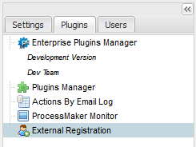
By clicking on this option, a list with the external registration form will display
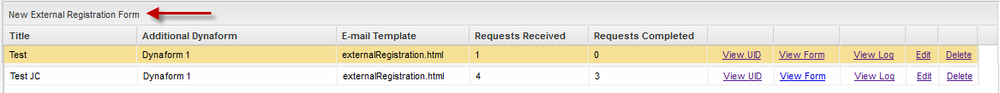
To create an external registration form click on the option above the list and a new form will display to be filled:
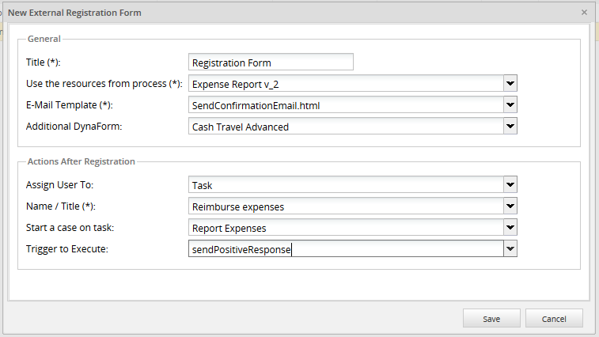
Where:
General
- Title: Give a brief title, as a main description, for the new external registration form.
- Use the resources from process: Select a process from the list. This selected process will allow to display the list of available Dynaforms, on a below field, so select the process which DynaForm will be selected as the one that will be send as an external link to be published by the user:
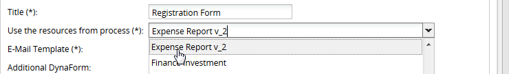
- E-Mail Template: Choose the template which will be sent on the email. The plug-in is installed with a default template called externalRegistration.html. To add more templates, check this documentation.
- Additional DynaForm: A list of available Dynaforms will list according to the process selected before. This option is additional, if the user needs to publish DynaForm fields at the end of the user registration form choose a DynaForm name from this list:
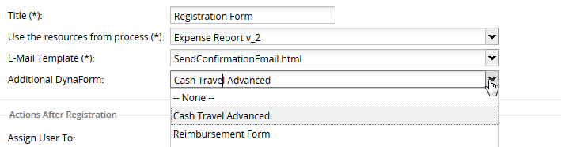
Note: Dependent fields in grids are not working, this issue will be solved in ProcessMaker version 2.5.2.
Actions After Registration (Optional Section)

- Assign User To: There are 3 options once the user has been registered into ProcessMaker:
- Task: Assign a user into a task of the process selected before.
- Group: Assign a user into a ProcessMaker group.
- Department: Assign a user into a ProcessMaker department.
- Name: Depending on the option selected on a previous field the name will change:
Choosing a Task:
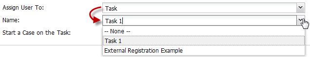
Choosing a Group:
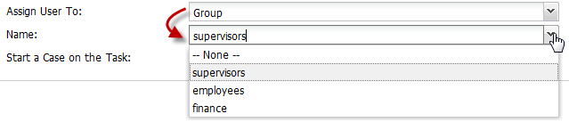
Choosing a Department:
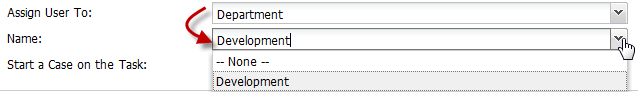
- Start a Case on the Task: When a user is created a case will create automatically. Choose the task of the process on which a case will start. It is not necessary to choose the two options mentioned before.
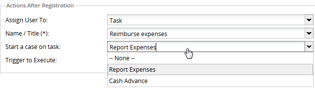
- Trigger to Execute:: Select the trigger which will be executed right after the user is registered. Triggers listed will be the ones created in the process selected. For instance, it is possible to create a trigger to add a note indicating that the user has been created successfully.
- Note: Since this trigger will be executed after the case is starting, Start a case on task option, the following functions will need the execution of a case to be used:
Finally, click on Save and the external registration form will create displaying it on the main list as follows:
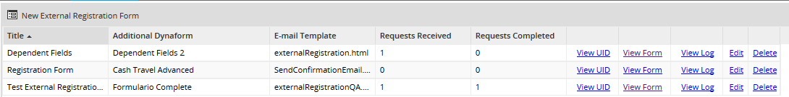
Where:
- Title: External Registration form title.
- Additional Dynaform: If an additional Dynaform was chosen, its name will be display on this row.
- e-mail Template: Name of the template used to send emails.
- Requests Received: It shows the number of requests recived when an account is created.
- Requests Completed: It shows the number of requests completed.
- View ID: View the ID of the external registration form created:

- View Form:: View the Form to be published. This is only a preview, this form can be modified.
- View Log: Shows the number of users created for this external registration form defined before. Remember that one of more users can be created for one external registration form defined.

- Edit: If some changes are required, click on this option to edit the external registration form.
- Delete: Delete the external registration form created.
Creating an User Account
As it was mentioned before, to create an user account, the link must be published. Also if the link hasn't published yet and it needs to be checked click on View Form: and it will display as follows:
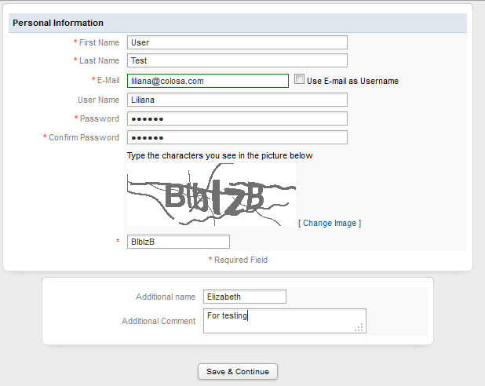
Fields to be filled:
- First Name: User's first name.
- Last Name: User's last name.
- E-mail: Email where the link to activate the account will be sent.
- Use E-mail as user name: E-mail field can be used as user name, if this option is checked, User Name field will disable. Use this email to log-in into ProcessMaker.
- User Name: Enter a name that will be used to log-in into ProcessMaker, it will validate if the username entered exists.
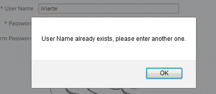
- Password: Enter a password that will be used to authenticate into ProcessMaker.
- Confirm Password: Re-enter previous password, with a validation if both passwords are not the same. This validation was added from version 2.0.40.
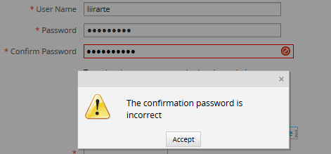
- Captcha Code: Type the characters that are displayed on the image. This prevents standard automated software from filling out a form.
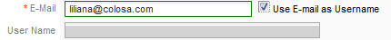
Note 1: User will be created with a PROCESSMAKER_OPERATOR role.
Note 2: If an additional form was selected, it will display below the User Account registration as the image above.
Finally, click on Save & Continue to complete the registration, and a confirmation message will display:
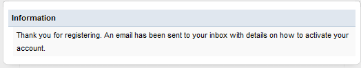
Activating an Account
When the user registration is completed, and email will send to the user's account:
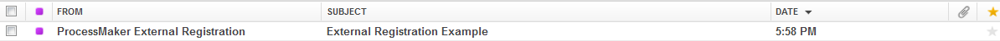
User will receive all his/her information to log-in in ProcessMaker and how to activate the account:

Note: The image background was modified using the ProcessMaker HTML Editor
Click on any of the links to activate the account
Login with the new user's account
When user has received his/her data account, it is possible to login into ProcessMaker and case will be redirected to Draft

NOTE: Form version 2.0.9 of the plug-in, cases will be redirected automatically to the Inbox:
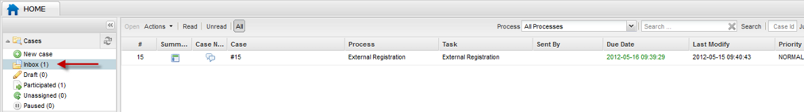
ProcessMaker Functions
Those PM functions are available once the plug-in is installed:
externalRegistrationSendEmail()
Create a request and send an email. This function allows user to have the confirmation link be sent in his email, so basically the user will click on the link to activate his account.
With this Function is possible to create the request in the process and send it to any user as an invitation for the participation.
Parameters
- $erUid: External registration form UID.
- $email: user email where the email request will be sent.
- $data: Dynaform variables to be sent in the template. This parameter is optional.
getExternalRegistrationLink()
This function returns a link of the form. This link may be used in different ways, for example to send it by email or include it in a form
Parameters
- $erUid: External registration form UID.